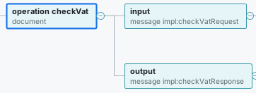
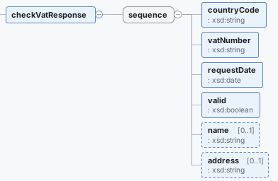
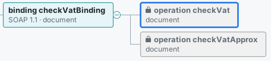
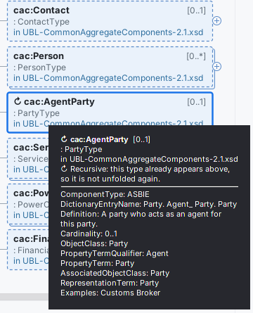
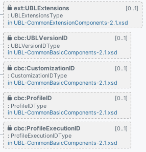
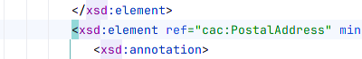
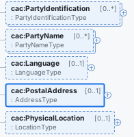

For SOAP contracts
A WSDL's Design tab starts with its services, ports and their addresses, each binding with SOAP 1.1 or 1.2 and the document or rpc style, and the operation names. Each operation unfolds to its input, output and fault messages, their parts, and the XSD fields behind them, from schemas inline in the WSDL or imported from the folder. A missing message, part element or binding is a red box that says what is missing.


checkVatService.wsdl: operation checkVat, its input and output messages…
checkVatResponse. These levels need the licence.
Watch it work
What it does
- A Design tab beside the Text tab for every file whose root is
xs:schemaorwsdl:definitions, whatever its extension (.xsd,.XSD,.wsdl,.xml). No file type is registered, so your file associations stay as they are. - The content model, left to right: elements with name and type,
sequence/choice/all, cardinalities, attributes with use, default and fixed values, base types, enumerations, andxs:documentationin the tooltip. A Legend button explains every colour and border. - Large schemas stay usable: the diagram builds in the background and opens at the first level; boxes unfold on demand and scroll into view; a type that contains itself is marked ↻. Files over the IDE's 2.5 MB code-insight limit work too.
- Navigation both ways: double-click a box, or press Enter, to open its declaration at the exact line; Show in Design (Navigate menu, context menu, Ctrl+Alt+Shift+G) selects the box under the caret; in a split editor the selection follows the caret.
- Expand All, Collapse All, zoom, Fit to Window, search by name. Edits refresh the diagram, and what you unfolded is kept per file, also after a restart.
- Multi-file schemas (licence): include, import and redefine through relative
schemaLocation; imports with only a namespace matched bytargetNamespacein the folder, then the project, then its libraries; boxes from other files in place, opening in their own file; anything unresolved a red box that names it.
In the IDE, for real
Every image on this page is a real-size part of a real IntelliJ IDEA Community 2025.1.7 window with Xsdtrail 1.0.4 installed, not a mockup; tap one for the whole window. The project is a small invoice gateway that keeps two real, public contracts: the OASIS UBL 2.1 schemas and the European Commission's VIES VAT-check WSDL, both unmodified.


xs:documentation. cac:AgentParty is a PartyType inside a PartyType, so it is marked ↻ instead of unfolding forever.



cac:PostalAddress reference at line 22,479…
Measured
Time to the first level, from the plugin's own benchmark (how it was measured is below).
| Schema set | Files | Components | First level |
|---|---|---|---|
| OASIS UBL 2.1 Invoice | 14 | 2,843 | 198–247 ms |
| Generated multi-file set | 26 | 5,001 | 228–305 ms |
| A 5.6 MB WSDL (one file, over the IDE's code-insight limit) | 1 | 1,546 | 397–521 ms |
In a running IDE the first open is slower: about half a second for UBL Invoice, and 1 to 1.6 s while the IDE is still indexing after startup. The status line shows the build time on your machine. Also checked: all 65 UBL 2.1 document schemas (the first 3,000 boxes of each), and a 7-file SOAP WSDL with 491 operations. None showed an unresolved reference.
How the images, the video and the numbers were made
Benchmark: a headless test in IntelliJ IDEA 2025.1.7 on 4 CPUs, five cold runs per set; the table gives the range.
Images: IntelliJ IDEA Community 2025.1.7 started from the plugin's build (Xsdtrail 1.0.4) under a virtual display at 1280×800, light theme, each image cut at real size from the full window it links to. The listing does not exist yet, so the images with licensed features were taken with a stand-in for JetBrains Marketplace licensing in that sandbox IDE; the free-tier images were taken with the same stand-in set to "no licence". The status lines read 894 ms (licensed) and 930 ms (free tier) for the first open of UBL-Invoice-2.1.xsd, about 45 seconds after the IDE started.
Video: recorded with Xsdtrail 1.0.1 (licensed shots, same stand-in) and 1.0.2 (the free-tier shot). Since then the diagram gained a Legend button, a WSDL lists its operations before its types, and a locked box no longer carries the line "Locked: needs a licence", which the video's free-tier shot still shows. Its status lines read 1,036 ms and 522 ms, first opens on our test machine.
Questions
Is it really pay once?
Yes. It is a JetBrains Marketplace perpetual licence: $12 once, personal or commercial alike, every update included, nothing renews. The single-file features are free with no time limit.
How do I start the 30-day trial?
Click Get a licence or trial under any Design tab with locked boxes (or use Help > Manage Licenses… in IntelliJ IDEA Community, Help > Register… in paid IDEs). The IDE's own licence dialog opens on Xsdtrail; choose Start trial. It asks you to log in to a JetBrains Account, which is free. Open Design tabs unlock by themselves.
Will it change how my .xsd or .wsdl files open?
No. Xsdtrail registers no file type. The Design tab is offered from the file's content, so .xsd, .XSD, .wsdl and schemas saved as .xml all get it, and your file type settings stay as they were.
Does it download schemas or send anything anywhere?
No. It makes no network calls and collects no data. A schemaLocation that is a URL is reported as not downloaded; the import is then matched by namespace if a local file declares it.
My import has only a namespace. Will it find the file?
With a licence, yes, if a schema with that targetNamespace is in the same folder, the project, or the project's libraries. If two files declare the same component, the import box warns and names the file it used. While the IDE is still indexing, it says so and rebuilds when indexing ends.
What happens without a licence, or when the trial ends?
Boxes from other files and each WSDL operation's messages show as locked, with the file named; one line under the diagram says what is locked. Nothing pops up, and the single-file Design tab keeps working, a WSDL's services, bindings and operation names included.
Why does the IDE ask for a restart after installing?
The IDE restarts for every paid or freemium plugin that is not made by JetBrains, so this step cannot be skipped.
Can I edit the schema, generate sample XML or export the diagram?
Not in version one. Xsdtrail reads schemas; you edit them in the Text tab and the diagram refreshes. If you need export, tell us at support@ochrestack.com.
Details
- Buying: through JetBrains Marketplace, which sells, bills and refunds the licence under its own terms.
- Compatibility: as at the top; also checked with JetBrains' Plugin Verifier against IntelliJ IDEA 2025.1.7 and 2026.3. English only.
- Privacy: no network calls, no telemetry, no analytics, no data collection. Xsdtrail reads only the files of the open project. Licence status comes from your IDE's JetBrains Marketplace licensing; the plugin itself sends nothing. See also the privacy policy.
- Licence terms: the Xsdtrail End User License Agreement.
- Support: support@ochrestack.com, with the IDE version (Help > About) and, if you can, the schema or a reduced copy. Bug reports and feature requests are welcome at the same address.
Install
- Once the listing is live: in the IDE, open Settings > Plugins > Marketplace, search for Xsdtrail and click Install. Restart the IDE when it asks.
- Open any file whose root element is
xs:schemaorwsdl:definitionsand click Design under the editor. Click ⊕ on a box, or press Space or →, to unfold it; double-click a box to open its source line.
The one-page quick start covers the legend, navigation, multi-file schemas, the WSDL view and the licence.
Known limits
- Version one reads schemas: no editing from the diagram, no sample XML or SOAP envelopes, no image, SVG or JSON export, no remote schemas or XML catalogs, no WSDL 2.0, XSD 1.1 assertions, DTD or RELAX NG, no validation of XML documents.
- The root element must start within the first 1 MB of a file. Namespace lookup outside the file's folder considers
.xsdfiles only. - When one namespace matches several files that declare the same component, the diagram uses the first (folder before project, then by path) and the import box warns.
- Expand All unfolds up to 4,000 boxes and says when it stops; unfold the rest one branch at a time.
UBL is an OASIS standard; the UBL 2.1 schemas shown are © OASIS Open 2013, shown unmodified. The VIES checkVatService.wsdl is published by the European Commission. Xsdtrail is not affiliated with or endorsed by OASIS, the European Commission or JetBrains.